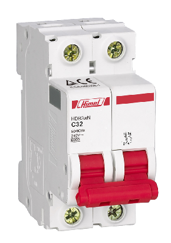
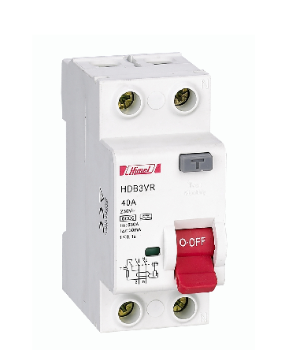

O mini disjuntor é um dispositivo de proteção elétrica projetado para interromper automaticamente o fluxo de corrente em um circuito quando ocorre uma sobrecarga ou curto-circuito. Ele é amplamente utilizado em sistemas elétricos residenciais, comerciais e industriais para proteger os fios e equipamentos contra danos causados por correntes excessivas.

O interruptor diferencial é um dispositivo de segurança elétrica projetado para detectar falhas de isolamento em circuitos elétricos. Ele interrompe o fluxo de corrente quando detecta uma diferença entre a corrente que entra e a que sai, protegendo contra choques elétricos e incêndios causados por vazamentos de corrente.